Winning
entries of the Documentation Project/Worldlabel Template/Clipart
Competition
About The Competition
The OpenOffice.org Documentation Project/Worldlabel.com
contest is over. The judges
have made the final selections from a total of 159
entries.
Prizes have been generously provided by Worldlabel.com and Graham
Lauder of http://ooogear.co.nz .
We hope everyone has enjoyed this contest and will be prepared for
next year's, again sponsored by Worldlabel.com.
Winners
|
PRIZES
|
TEMPLATE WINNERS
|
|
1st Prize USD750
|
Matthias
Ansorg
|

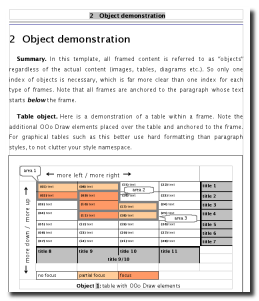
His
Thesis kit (Template
and Additions ) is, by far, the most comprehensive entry received. It
makes good use of Writer features, and includes detailed
instructions, and adds features for using Biblio.
|
|
2nd Prize USD300
|
Paul Gress
|

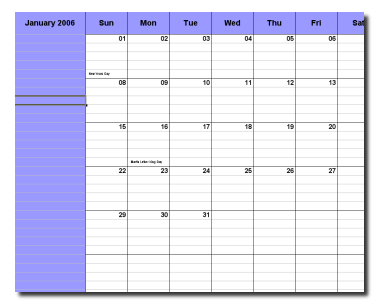
His
calendar_pg.ots which makes good use of formulas, allows entries into
cells and looks nice.
|
|
3rd Prize USD250
|
Aurélien
Pocheville
|
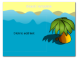
His
Beach.otp was judged to be most interesting .
|
|
4th Prize USD200
|
Michelle
Williams
|
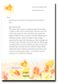
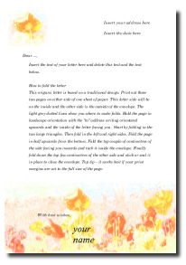
Her
Origamiletter was judged to be the most original and aesthetic
entry.
|
|
5th Prize USD200
|
Svatopluk
Vit
|
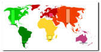
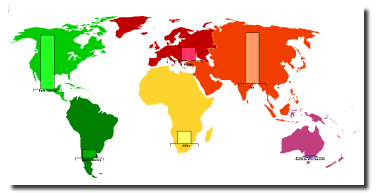
His
MapCharts.ots is somewhat large but is a well-executed Calc
spreadsheet.
|
|
|
|
PRIZES
|
CLIPART and DRAW WINNERS
|
|
1st Prize USD750
|
Trevor
Hitichings
|
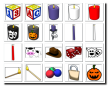
This
library contains
six categories (Alpha Blocks [stackable], Bathroom, Kitchen, Misc,
Stationary and Tools) with a number of 134 high quality graphics
(150DPI png images with alpha transparency).
|
|
2nd Prize USD300
|
Andrew C. E.
Dent
|
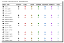
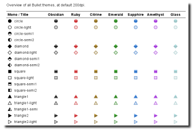
His
Bullets collection is able
to replace most of the bullets in the actual "Bullets"
gallery. With alpha transparency and much higher resolution they
look really "smooth" compared to the bullets used by
now. It's a set of different colored bullets and even more
black/white bullets for high contrast themes (accessibility).
|
|
3rd Prize USD250
|
Nicole
Follet-Dunn
|
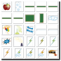
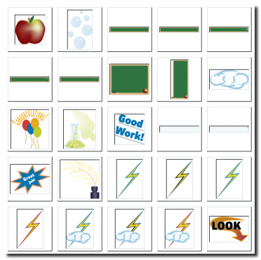
Clipart for Teachers will be quite useful to spice up school materials.
They are not styled with sophisticated gradients and 3D-effects,
but serve well for that purpose.
|
|
4th Prize USD200
|
Akira
Matsumiya
|

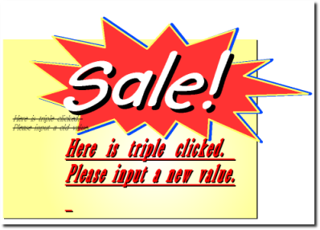
Sale.otg
uses text
fields to enter old and new prices which are then formatted
automatically.
|
|
5th Prize USD200
|
Gisbert
Friege
|

His
DPTC_pyramids.otg is a useful template to print out exercise
sheets for primary school for teaching addition and
multiplication.It's macro based and Draw is used to draw the lines
of the pyramids and to print it out.
|
|
|
Our contest sponsors
 Our
prime contest sponsor, Worldlabel.com,
has committed USD$5000 to expand the number of templates in the
OpenOffice.org document project repository. A panel of judges has
evaluated and selected the finalists templates and collection of
clipart.
Our
prime contest sponsor, Worldlabel.com,
has committed USD$5000 to expand the number of templates in the
OpenOffice.org document project repository. A panel of judges has
evaluated and selected the finalists templates and collection of
clipart.
 OOGear
is providing merchandize prizes. Thank you Graham Lauder!!
OOGear
is providing merchandize prizes. Thank you Graham Lauder!!